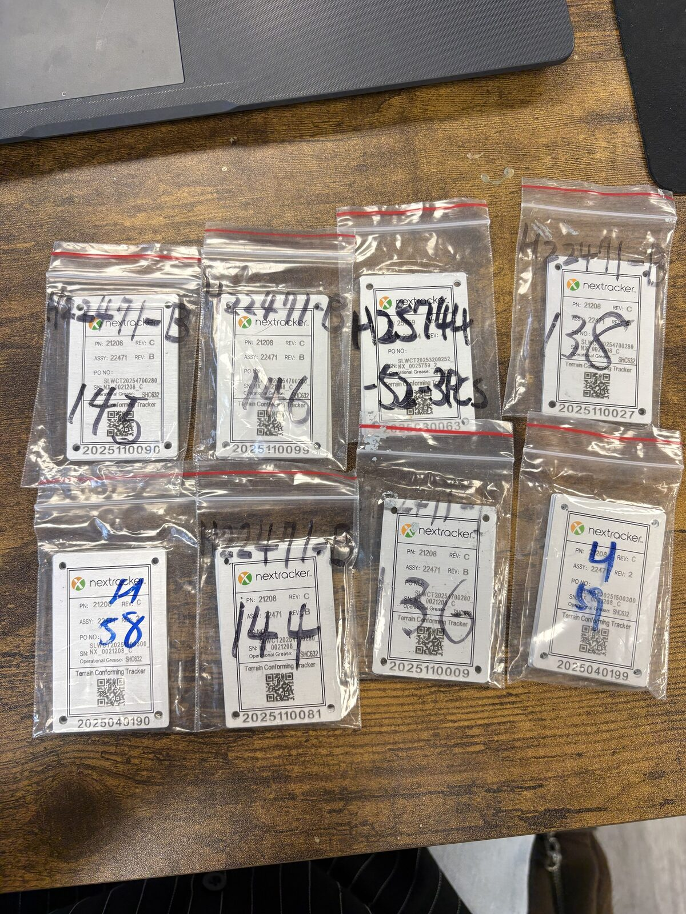
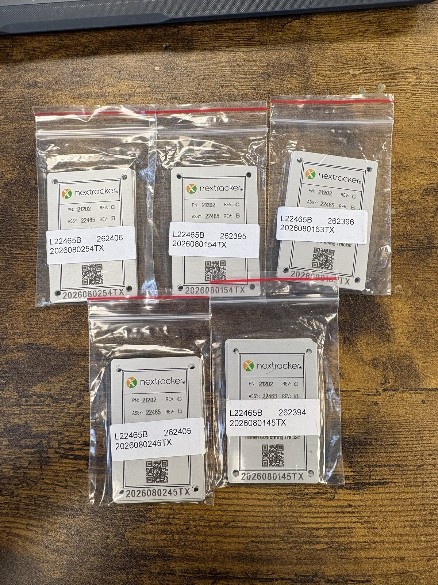
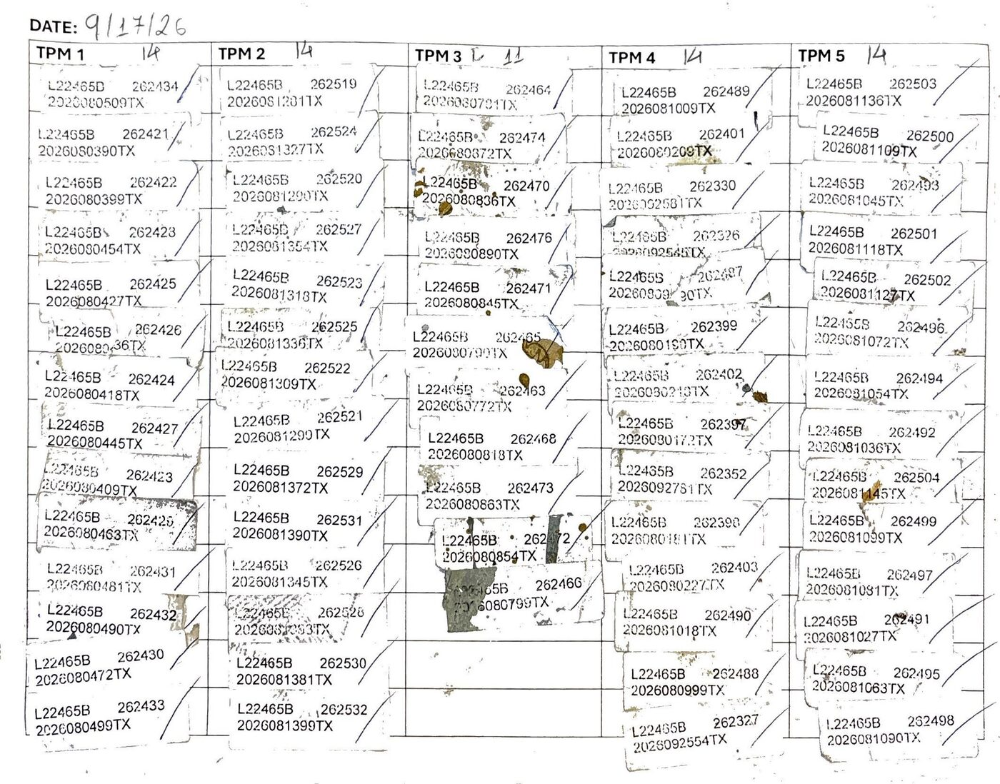

Crate and serial numbers were handwritten in Sharpie, directly on bags of tags.
That sounds minor until you see what it actually caused. Handwriting was often hard to read. Sharpie ink rubs off with handling. And once a number faded or smudged, there was no way to confidently trace which serial number belonged to which crate.
The numbers also lived in an Excel sheet with no real structure behind it — no validation, no enforced uniqueness. Duplicate crate numbers and duplicate serial numbers showed up regularly, which is a real problem when those numbers are supposed to be unique identifiers.


Same lot, before and after: handwritten and easy to misread versus printed, consistent, and traceable by design.
This wasn't just a paperwork annoyance. Duplicates broke the production report itself. A single crate could get logged as produced twice, inflating output numbers. Crates marked "shipped" were sometimes still sitting in the warehouse. Crates that were never produced at all could still land on the production report.
Because there was no reliable way to trace a crate back to its actual serial number, none of this could be caught or corrected after the fact — it just piled up as inventory noise that someone, eventually, had to untangle by hand.
The numbering isn't simple sequential counting. Crate numbers increment by 1. Serial numbers increment by 9, with a skip rule: if the next serial's last two digits would land in an unusable range, the system has to jump to the next valid value instead.
Serial numbers can also reset mid-sequence at a specified crate, without disturbing any labels already generated earlier on the sheet. And lot prefixes — L vs. H — have to be applied exactly, since they're not interchangeable.
A rules-based label generation system, built in Python and Node.js, that generates printable label sheets directly from tracked state instead of anyone re-typing or hand-copying numbers.
The system encodes the actual rules instead of leaving them to memory: +1 per crate, +9 per serial, the skip logic for invalid ranges, mid-sequence resets, and exact lot-prefix handling. Because every number comes out of the system rather than being transcribed by hand, duplicates become structurally impossible. It also carries continuity across sessions, so starting a new sheet picks up automatically from the last crate and serial used on the previous one.
Every label is now legible, permanent, and traceable back to a specific crate and serial number. The root cause of the mismatch between production reports, shipping records, and actual warehouse inventory is gone, because the system that generates the numbers can't produce a duplicate in the first place.
The physical workflow changed too: instead of re-copying numbers by hand onto the daily production report, the printed sticker is peeled off the crate and applied directly to the report. There's no transcription step left to introduce an error.

The system also has a built-in fallback for damage: if a crate number becomes unreadable — covered in paint, or the sticker is torn — the crate can still be traced through its serial number, since every crate carries both identifiers independently.
The full script, including the skip-rule logic, the sheet-layout arrangement, and mid-sequence serial overrides:
"""
generate_label_sheet.py
Generates the crate + serial number sequence used for the Avery tag
label sheets (60 labels per sheet, arranged 4 columns x 15 rows).
THE CORE RULE
-------------
Each crate's serial number is the previous one + 9. But whenever that
+9 step would land on a serial number ending in "00" through "08"
(i.e. it would spill into the next hundred at a "low" value), we skip
ahead to the next value ending in "09" instead. In practice this means
serials climb in a repeating pattern of ...09, ...18, ...27, ...36,
...45, ...54, ...63, ...72, ...81, ...90, ...99, and then jump straight
to ...09 of the next hundred (skipping the whole "00" band).
Example: ...991, ...100 would normally follow 991 + 9, but since 100
ends in "00" (which is in the 00-08 forbidden band), we bump it up to
...109 instead.
HOW TO USE
----------
Just edit the four settings under "SHEET SETTINGS" below and run the
script. It prints the 60 labels in the same left-to-right, top-to-
bottom order they appear on the printed sheet (column-major fill:
column 1 gets crates 1-15, column 2 gets crates 16-30, etc.)
"""
def next_serial(previous_serial: int) -> int:
"""
Given the previous serial number, return the next one in the sequence.
Normally this is just +9. But if that would produce a value whose
last two digits are 00 through 08, we skip ahead to the next value
ending in 09 instead (this avoids ever producing a serial number
that is an exact multiple of 100, or close to one).
"""
natural_next = previous_serial + 9
last_two_digits = natural_next % 100
if last_two_digits <= 8:
# Bump forward so the last two digits become "09"
return natural_next - last_two_digits + 9
else:
return natural_next
def generate_serial_sequence(start_serial: int, count: int) -> list[int]:
"""
Build a list of `count` serial numbers, starting at `start_serial`,
applying the skip-the-hundred rule at every step after the first.
"""
serials = [start_serial]
for _ in range(count - 1):
serials.append(next_serial(serials[-1]))
return serials
def arrange_into_grid(labels: list[str], columns: int, rows_per_column: int) -> list[str]:
"""
Take a flat list of labels (in crate order) and reorder them so they
read correctly on the printed sheet: column 1 top-to-bottom first,
then column 2 top-to-bottom, etc. -- but the DOCUMENT itself is
filled row-by-row (row 1: col1, col2, col3, col4; row 2: col1, ...),
so this function returns the labels in that row-major "reading"
order, ready to drop straight into the Word template one at a time.
"""
# First, split the flat (crate-order) list into columns
grid_columns = [
labels[c * rows_per_column: (c + 1) * rows_per_column]
for c in range(columns)
]
# Then read across each row: row 0 of every column, then row 1, etc.
row_major_order = []
for row in range(rows_per_column):
for col in range(columns):
row_major_order.append(grid_columns[col][row])
return row_major_order
def build_label_sheet(
label_prefix: str,
start_crate: int,
start_serial: int,
add_tx_suffix: bool = True,
total_labels: int = 60,
columns: int = 4,
) -> list[str]:
"""
Generate one full sheet of labels.
Parameters
----------
label_prefix : the lot number, e.g. "L25750" or "H22471"
start_crate : the first crate number on the sheet
start_serial : the first serial number on the sheet (as an integer,
e.g. 2026070009 for "2026070009TX")
add_tx_suffix: whether to append "TX" to each serial number
total_labels : how many labels the sheet holds (default 60 = 4x15)
columns : how many columns the sheet is laid out in (default 4)
Returns
-------
A list of formatted label strings, in the row-major order they
should be typed into the Word template's label cells (left to
right, top to bottom).
"""
rows_per_column = total_labels // columns
serials = generate_serial_sequence(start_serial, total_labels)
crates = [start_crate + i for i in range(total_labels)]
suffix = "TX" if add_tx_suffix else ""
flat_labels = [
f"{label_prefix} {crate} {serial}{suffix}"
for crate, serial in zip(crates, serials)
]
return arrange_into_grid(flat_labels, columns, rows_per_column)
def build_label_sheet_with_override(
label_prefix: str,
start_crate: int,
start_serial: int,
override_crate: int,
override_serial: int,
add_tx_suffix: bool = True,
total_labels: int = 60,
columns: int = 4,
) -> list[str]:
"""
Same as build_label_sheet, but lets you force one specific crate to
use a different serial number than the sequence would naturally
produce. Every crate after the override continues the +9 (skip
the hundred) pattern starting from the overridden value.
Example: sequence runs normally, but at crate 26854 you need it to
read 2026010509TX instead of whatever the natural next value was.
"""
rows_per_column = total_labels // columns
suffix = "TX" if add_tx_suffix else ""
serials = []
previous = None
for i in range(total_labels):
crate = start_crate + i
if i == 0:
value = start_serial
elif crate == override_crate:
value = override_serial
else:
value = next_serial(previous)
serials.append(value)
previous = value
crates = [start_crate + i for i in range(total_labels)]
flat_labels = [
f"{label_prefix} {crate} {serial}{suffix}"
for crate, serial in zip(crates, serials)
]
return arrange_into_grid(flat_labels, columns, rows_per_column)
if __name__ == "__main__":
# ---------------- SHEET SETTINGS ----------------
LABEL_PREFIX = "L25750"
START_CRATE = 4648
START_SERIAL = 2026013036
ADD_TX_SUFFIX = True
# --------------------------------------------------
labels = build_label_sheet(
label_prefix=LABEL_PREFIX,
start_crate=START_CRATE,
start_serial=START_SERIAL,
add_tx_suffix=ADD_TX_SUFFIX,
)
for label in labels:
print(label)
# To override one crate mid-sequence, use this instead:
#
# labels = build_label_sheet_with_override(
# label_prefix="L25751",
# start_crate=26821,
# start_serial=2026010709,
# override_crate=26854,
# override_serial=2026010509,
# )